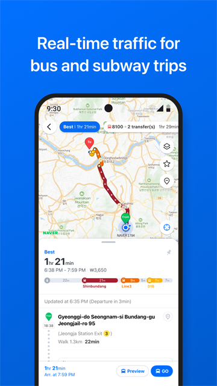
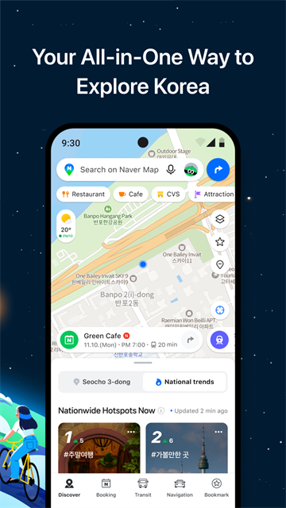

Naver Map 到底值不值得占手机那 227MB？
韩国本土第一地图应用，免费下载、无内购、无订阅——但"免费"不代表"没成本"。这篇账算给你看：哪类人必须装，哪类人装上也白装，Google Maps 和 KakaoMap 能不能替它。
先抛一个直接的问题：如果 Naver Map 要收费，你愿意掏多少钱？
这问题不是真让你掏钱——Naver Map 从 Google Play 商店或官方下载渠道获取都是免费的，没有高级版、没有内购、没有订阅制。但免费产品也有成本：占手机存储、后台跑定位耗电、学习成本，还有最关键的——你选择用它，就意味着放弃了其他地图。这篇账本算的就是这些隐性成本到底值不值。
定价拆解：免费版给了什么，付费版……等等，它没有付费版
先说清楚一个事实：从naver map官网和 Google Play 商店都能看到，最新版本约 6.11.x，安装包 227MB，完全免费。没有 Premium、没有 Pro、没有任何"解锁全部功能"的收费项。它的商业模式靠的是 Naver Place 商家入驻、Booking 预订平台抽成，以及 Discover 发现页的广告——用户端零门槛。
那免费给的东西到底有多全？
| 功能 | 免费版可用性 |
|---|---|
| 实时语音导航（驾车/步行/公交） | 完整，支持韩/英/中/日四种语音 |
| 矢量地图 + 3D 倾斜旋转 | 完整，默认开启 |
| 地铁车厢拥挤度查询 | 完整，三大地图中唯一精确到车厢 |
| Discover 发现页（本地生活内容） | 完整 |
| Booking 预订（餐厅/乐园/门票） | 完整，走 Naver Pay 或信用卡 |
| Panorama 街景 | 完整，韩国覆盖度远超 Google Street View |
| 收藏列表 + 分享 | 完整 |
| AR 方向指引 | 完整，但属于高级玩法 |
说实话，这个免费版给的东西比很多国家收费的地图应用还全。Google Maps 在韩国也能导航，但 3D 地标精度、街景覆盖、地铁拥挤度这三样核心能力，Naver 是碾压级的。
但免费不代表没有代价。Naver Map 申请的权限比 Google Maps 多——位置（必须）、麦克风（语音搜索可选）、物理活动（步行计步可选）、相机（AR/扫码可选）、蓝牙（车载自动启动可选）。最让人纠结的是位置权限的"始终允许"——naver map文档里对每个权限的用途都有详细说明，不给的话桌面 Widget 用不了，但给了就意味着它后台一直在跑。
算账：分三类人，免费版够不够用
第一类：轻度用户——偶尔打开查个地址、搜个店名
比如一年去韩国一两次的游客，或者在国内偶尔查一下首尔某家店的位置。这类人装不装 Naver Map 差别大吗？
我的判断：装一下，值。 理由很简单——Google Maps 在韩国的 POI（兴趣点）数据确实不如 Naver 新。韩国商家日常维护 Naver Place 上的资料，营业时间、最新招牌、甚至临时停业的通知都是 Naver 先更新。你用 Google Maps 搜到的餐厅可能已经关了三个月，但 Naver Map 上的评论三天前还在刷。
每单位时间成本算一下：下载安装五分钟，去韩国的时候能帮你省至少十次"走错路"或"找错店"的时间，每一次省的时间都远超那五分钟的安装成本。划算。
第二类：主力用户——在韩国生活半年以上，每天用导航或查路线
这类人是 Naver Map 的核心用户群。每天通勤、下班顺路找餐厅、周末出去玩——地图是高频刚需。
免费版够用吗？完全够用，甚至超出预期。 地铁车厢拥挤度这个功能，用过的人就再也回不去了——早高峰在首尔站转乘，提前知道哪节车厢空，能少挤两分钟。

Discover 发现页的 Nearby 推荐基于真实用户行为数据，不是广告，比自己刷小红书找餐厅靠谱多了。Booking 功能集成在底部标签里，订餐厅订乐园门票不用跳出 App。

这一类人甚至可以考虑把 Naver Map 设为默认地图。227MB 的存储空间换一个覆盖更全、数据更准的本地地图——这笔账怎么算都是 Naver 赢。 唯一要注意的是权限配置：导航时允许位置就行，不必给"始终允许"，Widget 那点便利不值得一直后台跑定位耗电。
第三类：重度用户——在韩国定居，或者做旅游博主/代购
这类人对地图的要求是极致的——不仅要导航，还要街景认路、收藏列表管理几十家店、甚至用 AR 功能在明洞的小巷子里不迷路。
免费版依然够用。但有一个隐性成本值得算：Naver Map 的收藏列表功能虽然免费，但如果你的收藏夹已经多到要分类管理，你会发现 Naver 的列表管理功能比 Google Maps 弱一点——不能拖拽排序、不能给列表加自定义图标。这是个小缺憾，但对重度用户来说会有点不舒服。
另外，重度用户大概率会用上 Booking 预订功能。这里要注意：Booking 走的是 Naver Pay 或信用卡，如果你在韩国没有 Naver Pay 账号，用信用卡也能付，但汇率手续费要看发卡行。这笔成本是消费本身的成本，不是地图应用的成本，但要记在账本里。
替代方案：不装 Naver Map 有什么别的路
方案一：Google Maps
优点是界面熟悉、全球覆盖、收藏列表管理更灵活。缺点在韩国太明显了——3D 地标模型只有骨架没有细节（景福宫在 Google 上就是个方块），Panorama 街景覆盖不全（首尔老城区的巷子经常断片），地铁拥挤度没有（这一点是硬伤），Discover 里的本地内容要么没有要么过时。
隐性代价：你会错过地铁拥挤度、错过 Naver Place 上的真实评论、错过街景里那些 Google 没拍到的小巷。这些东西在韩国旅行或生活时都是高频刚需。
方案二：KakaoMap
Kakao 是韩国另一家本土巨头，KakaoMap 也是免费的。优点是界面更活泼、和 KakaoTalk 生态打通（可以从聊天里直接把位置发给朋友）。缺点是 Discover 发现页的内容生态远不如 Naver——Naver Place 是韩国商家日常维护的平台，Kakao 的商家数据更新明显慢一拍。地铁拥挤度 Kakao 也有，但精度不如 Naver。
隐性代价：你用着一个界面好看但信息滞后的地图。找餐厅时可能会多走五分钟冤枉路，因为 Kakao 上显示"营业中"的店其实已经关了。
方案三：只装一个导航 App，用别的工具补
比如导航用 Google Maps，找餐厅用小红书或 Naver 网页版。理论上可行，但实际操作下来你会发现：在陌生城市手机上切来切去查路线、查评论、查预订，这个上下文切换的时间成本比多装一个 227MB 的 App 高多了。
结论：三类人对号入座
闭眼装（免费也要装）：
- 计划去韩国旅行的游客，哪怕只去一次
- 在韩国生活或工作的人
- 喜欢做攻略、收藏餐厅/景点的人
- 已经在韩国用过 Google Maps 觉得"哪里不对"的人
装上也不亏：
- 偶尔需要查一下韩国地址的人（比如代购、海淘客服）
- 对地铁拥挤度有刚需的人（首尔早高峰通勤）
没必要装：
- 这辈子没打算去韩国也不跟韩国打交道的人
- 手机存储紧张到删了微信也要腾空间的人（但 227MB 真的不算多）
- 已经完全习惯 Google Maps 生态、不想再维护一套收藏列表的人
最后补一个账本的"彩蛋"：如果你同时拥有 Naver Map 和 Google Maps，在首尔市中心开 3D 倾斜地图对比一下——景福宫、N 首尔塔在 Naver 上是完整的立体模型，在 Google 上就像 PPT 里贴了个示意图。这个差距就是"免费"的真实价值。
不要让"免费"这两个字骗你——免费产品也要算账，算的不是钱，是你的时间和体验成本。Naver Map 在韩国这个场景下，免费给了行业内最好的东西，这笔账不难算。想深挖细节的话，GitHub、Gitee、GitCode上都有整理好的完整资料，国内访问 Gitee 通常更顺畅。